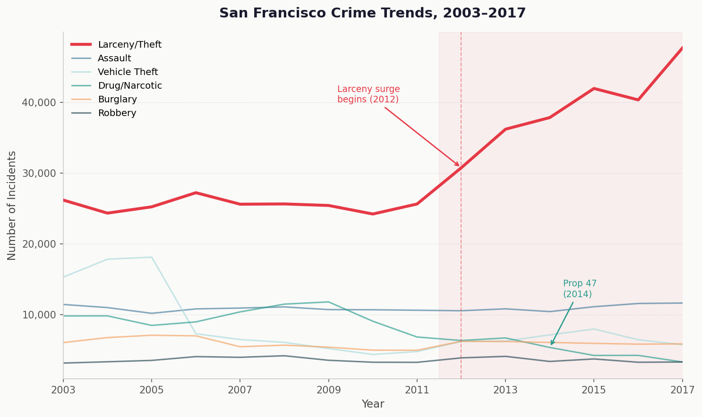

The dataset
Two million incidents, fifteen years of San Francisco
The San Francisco Police Department publishes detailed records of every crime incident reported in the city going back to 2003. The historical dataset used here covers January 2003 through December 2017 — just over 2 million incidents — and includes the crime category, date, time, day of week, and the police district where it occurred.
A quick word of caution before we dive in: incident reports reflect reported crime, not crime itself. Changes in policing strategy, reporting habits, or even insurance requirements can make the data move in ways that have nothing to do with what's actually happening on the street. We'll come back to that.
Finding 1
One category broke away from the pack
Plot all six focus crime categories over time and something stands out immediately: five of them are roughly flat, cycling up and down without a clear long-term trend. But one — larceny/theft — takes off around 2012 and barely looks back.

By 2017, larceny/theft was responsible for more incidents than the next three categories combined. This isn't a slight bump — it is a structural shift.
"From 2012 to 2017, larceny incidents in San Francisco grew by 82%. No other major crime category came close."
What drove it? The dominant type of larceny in SF — and the one that defines this era — is theft from vehicles. Smashed windows, stolen bags left on seats, laptop chargers grabbed from back seats. The surge maps almost exactly onto the explosion of tourism and the tech industry's arrival in the city, which brought waves of rental cars full of visible luggage parked in neighborhoods that were not designed for that kind of density.
2010 → 2017
in 2017 (peak year)
2009 → 2017
Finding 2
It isn't spread evenly across the city
If larceny were truly a citywide phenomenon, we'd expect it to be distributed roughly in proportion to population. It isn't. The heatmap below shows 8,000 sampled larceny incidents from the peak years 2015–2017. The concentration is striking.
The geography is not random. Southern SF — home to Caltrain, tech company shuttle stops, the ballpark, and a dense cluster of short-term rental properties — is the clear epicenter. Central district, which includes Union Square and the heavily touristed corridor between Market Street and the waterfront, follows closely.
This geographic pattern aligns with what criminologists call "hot spots": crime clusters in places that combine high foot traffic, a large proportion of visitors (who are less familiar with local risk), and targets of opportunity like cars and bags left unattended. A 2017 San Francisco Chronicle investigation found that roughly 70 car break-ins per day were being reported citywide — many going unreported altogether [1].
Finding 3
The peak window: Friday afternoon
When does larceny happen? The interactive heatmap below breaks every incident in the full dataset (2003–2017) by day of week and hour of day. Hover over a cell to see the exact count.
The pattern here is intuitive but worth spelling out: larceny peaks when the city is fullest. Weekday commute hours — especially Friday — concentrate the most potential victims (and targets) in space and time. The relative quiet of early Sunday morning is real, but it's partly an artifact: thefts discovered the next day get logged at discovery time, not necessarily at the time of theft.
Caveat
What the data can and cannot tell us
Before drawing conclusions, it's worth asking: does this chart reflect a real rise in theft, or a rise in reported theft?
The answer is probably both — but the distinction matters. Starting in the mid-2010s, San Francisco ran sustained public campaigns encouraging residents to report vehicle break-ins, and the SFPD rolled out online reporting tools that made filing a report much easier. When reporting is easier, reports go up even if the underlying crime rate stays flat [2]. At the same time, insurance companies often require a police report for a claim — another reason the number of logged incidents can climb independently of actual theft.
This connects directly to a broader problem in crime data that the course has discussed: "dirty data" shaped by enforcement choices, not just criminal behavior. When Proposition 47 passed in 2014, drug possession became a misdemeanor. Police departments across California changed how they handled these calls, and reported drug crimes fell sharply — not because drug use declined, but because the legal category changed [3].
The larceny surge is real and documented by sources beyond the SFPD data. But its exact magnitude, and whether it peaked or merely plateaued after 2017, requires looking beyond a single dataset.
References
- Sernoffsky, E. (2017). Car break-ins hit record high in San Francisco. San Francisco Chronicle. sfchronicle.com
- Loftin, C., & McDowall, D. (2010). The use of official records to measure crime and delinquency. Journal of Quantitative Criminology, 26(4), 527–532.
- Bird, M., & Grattet, R. (2016). Does Proposition 47 explain the increase in larceny theft? Public Policy Institute of California. ppic.org
- Richardson, R., Schultz, J. M., & Crawford, K. (2019). Dirty Data, Bad Predictions: How Civil Rights Violations Impact Police Data, Predictive Policing Systems, and Justice. New York University Law Review Online, 94, 192–233.
- San Francisco Police Department. Police Department Incident Reports: Historical 2003 to May 2018. DataSF Open Data Portal. data.sfgov.org